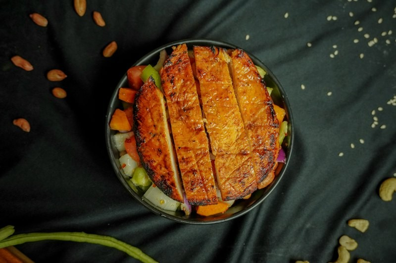
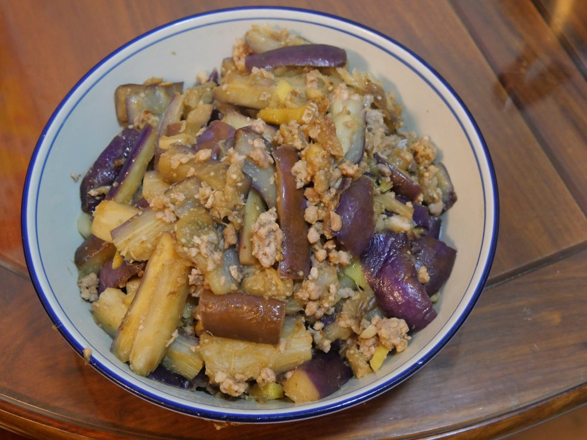

48 Unsplash searches; 493 candidate records; 372 distinct images. Two additions: one Unsplash and one Wikimedia Commons photo. Catalog coverage: 133 of 222; 89 menus remain without images. Local database sync could not connect; no database records changed.
Following commits b32e761 and d2e8108: visually review, select IDs, apply photo-key pools, generate credits and report Unsplash downloads. Images illustrate the food; portions, containers and side arrangements may vary.
ทีรามิสุสลัด

Representative customizable protein salad: grilled chicken, vegetables and nuts. Matches the salad category described by the menu; does not claim the exact five selected fillings or the restaurant portion.
Original image · Zayed Ahmed Zadu · Unsplash License
มะเขือยาวผัดหมูสับ ราดข้าว

Eggplant and minced pork are visible and confirmed by the original source. The photo illustrates the cooked main dish; rice is not visible. Not used for the separate two-dish pork-belly combination.
Original image · Peachyeung316 · CC BY-SA 4.0
| Restaurant | Menu |
|---|
| เจริญรส แซ่บทอด อาหารตามสั่ง | ข้าวยำไก่แซ่บ |
| เจริญรส แซ่บทอด อาหารตามสั่ง | ข้าวยำหมูทอดแซ่บ |
| เชฟต๋อย | ข้าว+ไก่กรอบสโนว์ไวท์ |
| เชฟต๋อย | ข้าว+กะเพราปลาทู |
| เชฟต๋อย | ข้าว+สะเต๊ะไก่กรอบ |
| เชฟต๋อย | ข้าวผัดไก่กรอบสไปซ์ชีส |
| เชฟต๋อย | มาม่าดำมาเลย์หม่าล่าไก่กรอบ |
| เชฟต๋อย | ผัดมักกะโรนี |
| เชฟต๋อย | สปาเกตตี้กะเพราหมูสับ |
| เชฟต๋อย | สปาเกตตี้หม่าล่าไก่กรอบ |
| เชฟต๋อย | หมี่คลุกลูกชิ้นหมู |
| เชฟต๋อย | ผัดมาม่าต้มยำลูกชิ้นจัมโบ้ |
| เชฟต๋อย | ก๋วยเตี๋ยวหมูสับซอสมะเขือเทศ |
| เชฟต๋อย | ผัดมาม่าทรงเครื่องต้มยำ |
| เชฟต๋อย | ข้าวดาวเจียว |
| เชฟต๋อย | พริกแกงหมูกรอบ ราดข้าว |
| เชฟต๋อย | ข้าว+ไก่ผัดผงกะหรี่+ไข่ดาว |
| เชฟต๋อย | คั่วเกลือไส้กรอกไก่ ราดข้าว |
| เชฟต๋อย | พริกขิงไก่กรอบ ราดข้าว |
| เชฟต๋อย | ข้าว+กะเพราลูกชิ้นหมูกากเจียว |
| เชฟต๋อย | ข้าว+หมูสับคั่วพริกเกลือ |
| เชฟต๋อย | ข้าว+หมูกรอบคั่วพริกเกลือ |
| เชฟต๋อย | ข้าวผัดหมูหวาน |
| เชฟต๋อย | ข้าวผัดรถไฟ |
| ช.เจริญพาณิชย์ ข้าวหน้าของทอด | ข้าวของทอด ราดซอสแม็กกี้ |
| ช.เจริญพาณิชย์ ข้าวหน้าของทอด | ข้าวของทอด ราดซอสมะขาม |
| ช.เจริญพาณิชย์ ข้าวหน้าของทอด | ข้าวของทอด ราดซอสน้ำปลา |
| ช.เจริญพาณิชย์ ข้าวหน้าของทอด | ข้าวทอดกระเทียม |
| ช.เจริญพาณิชย์ ข้าวหน้าของทอด | ข้าวไข่เจียว (2 ฟอง) |
| แฟมิลี่ เคบับ ฮาลาล | อดาน่าเคบับแรปเนื้อ |
| แฟมิลี่ เคบับ ฮาลาล | ชิชเคบับแรปตับ |
| แฟมิลี่ เคบับ ฮาลาล | แรปปลาซาบะย่าง |
| แฟมิลี่ เคบับ ฮาลาล | โคฟต้าไก่+ข้าว |
| กินดัง ข้าวหน้าของย่าง | ข้าวหน้าหมูย่างทูโทน (สามชั้น+สันคอ) ไซส์ L |
| กินดัง ข้าวหน้าของย่าง | ข้าวหน้ากุ้งย่าง |
| กินดัง ข้าวหน้าของย่าง | ข้าวหน้าเนื้อใบพาย + ไข่ออนเซ็น พ่นไฟ ไซส์ L |
| กินดัง ข้าวหน้าของย่าง | ข้าวหน้าเนื้อพรีเมี่ยม + ไข่ออนเซ็น พ่นไฟ ไซส์ L |
| กินดัง ข้าวหน้าของย่าง | ข้าวหน้าหมูย่างทูโทน (สามชั้น+สันคอ) พ่นไฟ ไซส์ L |
| กินดัง ข้าวหน้าของย่าง | ข้าวหน้าหมูสามชั้น พ่นไฟ ไซส์ L |
| กินดัง ข้าวหน้าของย่าง | ข้าวหน้าหมูสามชั้น พ่นไฟ ไซส์ M |
| กินดัง ข้าวหน้าของย่าง | ข้าวหน้าแซลม่อนย่าง พ่นไฟ |
| กินดัง ข้าวหน้าของย่าง | ข้าวหน้ากุ้งย่าง พ่นไฟ |
| กินดัง ข้าวหน้าของย่าง | ข้าวหน้าหมูสามชั้น หม่าล่า |
| กินดัง ข้าวหน้าของย่าง | ข้าวหน้าหมูสันคอ หม่าล่า |
| กินดัง ข้าวหน้าของย่าง | ข้าวหน้าปลาซาบะย่าง หม่าล่า |
| กินดัง ข้าวหน้าของย่าง | ข้าวหน้าเนื้อพรีเมี่ยม + ไข่ออนเซ็น หม่าล่า |
| กินดัง ข้าวหน้าของย่าง | ข้าวหน้ากุ้งย่าง หม่าล่า |
| กินดัง ข้าวหน้าของย่าง | ข้าวหน้าแซลม่อนย่าง หม่าล่า |
| เฮง เฮง สุกี้ มฟล. | ข้าวหน้าน้ำจิ้มสุกี้ |
| เฮง เฮง สุกี้ มฟล. | สุกี้แห้งผัก |
| เฮง เฮง สุกี้ มฟล. | สุกี้แห้งไก่ |
| เฮง เฮง สุกี้ มฟล. | สุกี้แห้งหมู |
| เฮง เฮง สุกี้ มฟล. | สุกี้แห้งเบคอน |
| เฮง เฮง สุกี้ มฟล. | สุกี้แห้งหมึกกรอบ |
| เฮง เฮง สุกี้ มฟล. | สุกี้แห้งทะเล |
| เฮง เฮง สุกี้ มฟล. | สุกี้แห้งกุ้ง |
| เฮง เฮง สุกี้ มฟล. | สุกี้น้ำรวมมิตร |
| เฮง เฮง สุกี้ มฟล. | สุกี้น้ำหมึกกรอบ |
| เฮง เฮง สุกี้ มฟล. | สุกี้น้ำหมึก |
| เฮง เฮง สุกี้ มฟล. | สุกี้น้ำกุ้ง |
| จงหัวอาหมิง | สามชั้นทอดรสแซ่บ + เต้าหู้หมูสับ ราดข้าว |
| จงหัวอาหมิง | สามชั้นทอดรสแซ่บ + มะเขือเทศผัดไข่ ราดข้าว |
| จงหัวอาหมิง | สามชั้นทอดรสแซ่บ + มะเขือยาวหมูสับ ราดข้าว |
| จงหัวอาหมิง | สามชั้นทอดรสแซ่บ + มะระผัดไข่ ราดข้าว |
| จงหัวอาหมิง | หมูทอดรสแซ่บ + ผัดผักบุ้ง ราดข้าว |
| จงหัวอาหมิง | หมูทอดรสแซ่บ + ผัดผักกาดขาว ราดข้าว |
| จงหัวอาหมิง | มันฝรั่งผัดหมู ราดข้าว |
| จงหัวอาหมิง | ผักกาดดองผัดหมูสับ ราดข้าว |
| จงหัวอาหมิง | สามชั้นทอดเห็ด ราดข้าว |
| จงหัวอาหมิง | หมูทอดรสแซ่บ ราดข้าว |
| จงหัวอาหมิง | ปีกไก่ทอดรสแซ่บ ราดข้าว |
| ลิตเติ้ลกรินทร์ | มาม่าไก่กรอบเกาหลี |
| ลิตเติ้ลกรินทร์ | ข้าวไก่กรอบเกาหลีมาโย |
| ลิตเติ้ลกรินทร์ | ข้าวไก่กรอบสไปซี่มาโย |
| ลิตเติ้ลกรินทร์ | ข้าวไก่กรอบชีส |
| ลิตเติ้ลกรินทร์ | ข้าวไก่กรอบเกาหลี x ชีส |
| ลิตเติ้ลกรินทร์ | ข้าวไก่กรอบครีมหัวหอม |
| ลิตเติ้ลกรินทร์ | ข้าวไก่กรอบครีมหัวหอม x ซอสเกาหลี |
| ลิตเติ้ลกรินทร์ | ข้าวไก่กรอบผงวิงค์แซ่บ |
| ลิตเติ้ลกรินทร์ | ข้าวไก่กรอบโนริสาหร่าย |
| สเต็กลุงหยิกเชียงราย | ข้าวหน้ากุ้งดอง |
| สเต็กลุงหยิกเชียงราย | ข้าวไก่สไปซี่ |
| สเต็กลุงหยิกเชียงราย | ไวไวผัดฉ่าทะเล |
| แซนด์วิชไส้ทะลัก จูเซโย | แซนด์วิชไก่น้ำพริกเผา |
| แซนด์วิชไส้ทะลัก จูเซโย | แซนด์วิชเห็ดน้ำพริกเผา |
| ย่างให้ MFU | ย่างให้หมูกระทะชากาเกาหลี |
| ย่างให้ MFU | ย่างให้หมูกระทะชากาเกาหลี ไซส์ M |
| ย่างให้ MFU | ย่างให้หมูกระทะหม่าล่าเสฉวน |
| ย่างให้ MFU | ย่างให้หมูกระทะหม่าล่าเสฉวน ไซส์ M |